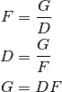
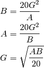
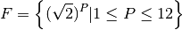

elflash – Electronic Flash¶
This is a Solver for electronic flash problems.
Legacy Output¶
ENTER: Guide Number (metres)...............? 3
ENTER: Subject distance (metres) ..........? 4
Aperture ...................... ƒ/0.8
Guide Number (metres) ......... 3.0
Guide Number (feet) ........... 9.8
Subject distance (metres) ..... 4.0
Subject distance (feet) ....... 13.1
Use ƒ/1.4 ....................... 23.1 m. ( 7.0 ft.)
Use ƒ/2 ....................... 16.1 m. ( 4.9 ft.)
Use ƒ/2.8 ....................... 11.5 m. ( 3.5 ft.)
Use ƒ/4 ....................... 8.1 m. ( 2.5 ft.)
Use ƒ/5.6 ....................... 5.8 m. ( 1.8 ft.)
Use ƒ/8 ....................... 4.0 m. ( 1.2 ft.)
Use ƒ/11 ....................... 2.9 m. ( 0.9 ft.)
Use ƒ/16 ....................... 2.0 m. ( 0.6 ft.)
Use ƒ/22 ....................... 1.5 m. ( 0.4 ft.)
Use ƒ/32 ....................... 1.0 m. ( 0.3 ft.)
Use ƒ/45 ....................... 0.7 m. ( 0.2 ft.)
Use ƒ/64 ....................... 0.5 m. ( 0.2 ft.)
Analysis¶
Variables
| F: | Aperture, ƒ/ |
|---|---|
| G: | Guide number in feet ( metres) |
| A: | Film speed, ISO |
| B: | Beam Candle Power Seconds |
| D: | Subject distance in feet ( metres) |
Formulae
Part one is the Aperture, Guide Number, Subject distance calculation.

Part two is Beam Candle Power Seconds, Film speed and Guide number

Implementation¶
hamcalc.audio_photo.elflash
This has calculations for flash photography.
- hamcalc.audio_photo.elflash.flash(B, A, G, D, F)¶
Solves electronic flash problems.
Parameters: - F – Aperture, ƒ/
- G – Guide number in feet ( metres)
- A – Film speed, ISO
- B – Beam Candle Power Seconds
- D – Subject distance in feet ( metres)
Returns: AttrDict with all values filled in
Test Case
>>> import hamcalc.audio_photo.elflash as elflash
>>> flash= elflash.Flash()
>>> f= flash( G=12, D=15, A=100 )
>>> round( f.B, 3 )
28.8
>>> round( f.F, 3 )
0.8
- hamcalc.audio_photo.elflash.aperture_iter(G)¶
Yields a sequence of F and D values for a given Guide number.
Parameters: G – Guide number in feet Returns: sequence of F aperature and D subject distance in feet.
Quirk¶
Input in metres first, if no input, then the prompt switches to feet. Almost every other program prompts for the measurement system first.
The relevant calculations are iterated four times.
The standard F-stops are listed in DATA instead of computed.
